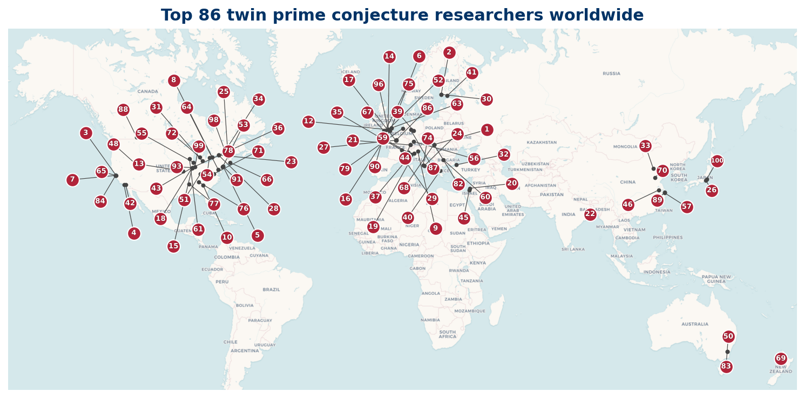

Who's Who in Twin Prime Research
A directory of researchers working on the twin prime conjecture
This site is a reference directory of the researchers most active on the twin prime conjecture. It catalogs the Top 100 researchers, gives their institutions, and provides a curated reading list of recent short papers for newcomers.
How the list is built
Three independent signals are combined into one composite ranking:
- arXiv preprint output, filtered to math.NT and math.CO categories, matched against 17 search terms.
- OpenAlex topical citations.
- zbMATH Open, using the MSC subject classes (11N05, 11N35, 11N36).
The three pipeline ranks are combined with a weighted order statistic: for each researcher the three ranks are sorted and weighted 70% on the best, 20% on the middle, and 10% on the worst. Lower is better. See the methodology for details.
Top 100 at a glance
100 researchers, drawn from 23 countries.
| Country | Top 100 researchers |
|---|---|
| US | 23 |
| 18 | |
| GB | 13 |
| CA | 6 |
| IT | 5 |
| CN | 5 |
| FI | 4 |
| AU | 4 |

Where to start
- The Top 100 is the canonical ranked list, sortable in your browser.
- Regional listings: North America, Europe, Asia & Pacific, Other regions.
- Reading list: short twin-prime papers for newcomers (in preparation).
- Data: the ranked list as an open CC-BY dataset, with a citable DOI.
- Methodology: how the data is built, audit decisions, and limitations.